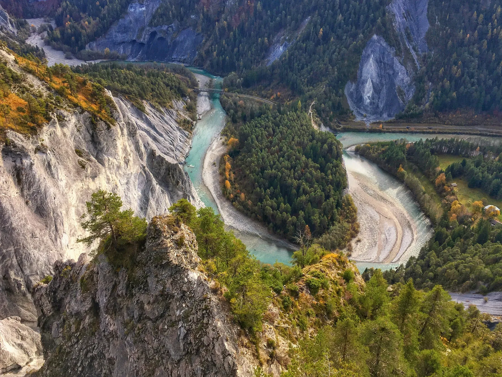

Photo · Jan HuberA DEEP CANYON IN THE EAST
The Ruinaulta. A white limestone canyon carved by the Rhine. From the viewpoint, it really does look like the States.
From Caumasee, follow the hiking signs to the Ruinaulta viewpoint. It's a short walk to the rim; the drop is big enough to be careful near the edge.
Sunrise is the light. The east face of the canyon catches first light and the mist often sits low in the bottom of the gorge. Twenty minutes later it's gone.